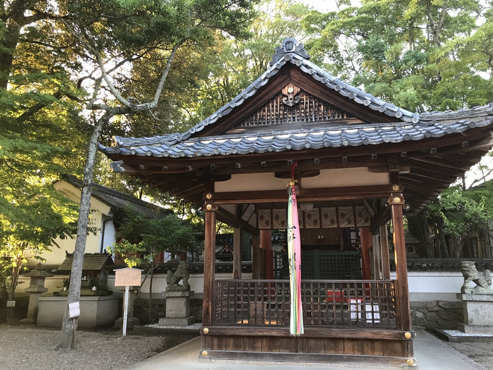

The cherry blossom (桜, sakura) is Japan's unofficial national flower. It has been celebrated for many centuries and holds a very prominent position in Japanese culture. There are many dozens of different cherry tree varieties in Japan, most of which bloom for just a few days in spring. The seasonal spectacle is celebrated with hanami (cherry blossom viewing) parties under the trees.

Temples in Japan
07/2017
Temples (寺, tera) are the places of worship in Japanese Buddhism. Virtually every Japanese municipality has at least one temple, while large cultural centers like Kyoto have several hundred.
Temples store and display sacred Buddhist objects. Some temples used to be monasteries, and some still function as such.
Tempura in Japan
04/2017
Tempura (天ぷら) are pieces of lightly battered, deep fried seafood and vegetables. Introduced to Japan during the 16th century by the Portuguese in Nagasaki, tempura has developed over the centuries into a popular Japanese dish both inside and outside of Japan. Tempura can be found in many types of restaurants across the country, where it is commonly served as a main dish, side dish or as a topping for tendon rice bowls, or udon and soba noodle dishes.